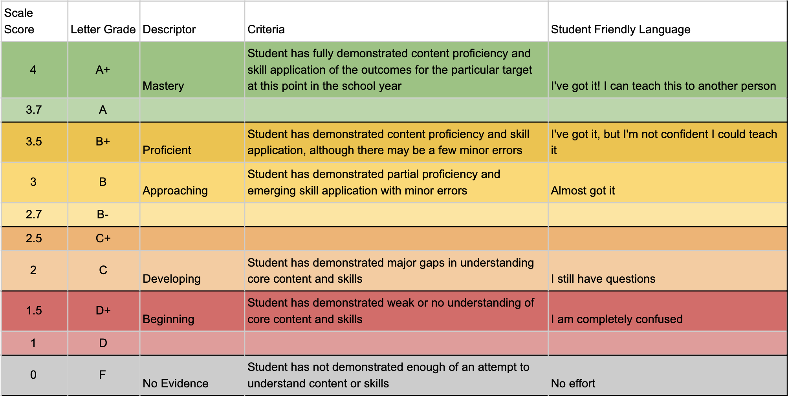

We will be piloting a grading system for certain classes that is different from the traditional grading scale and policies the school has used in the past. This is called “Standards-Based Grading,” and although it is new to the English classes in our district, it is not a new concept. It has been used for years and with great success in many schools throughout the U.S. and the world. In fact, research shows that it can be more equitable and more effective than many traditional grading practices, which is why we are excited to explore this with our students.
Using Standards-Based Grading, we will assess students’ skills and knowledge in relation to the specific Wisconsin State Standards for English Language Arts (which were recently revised and updated). We have combined and summarized these standards into more "student-friendly" descriptions. Explanations of these standards, targets, and summaries can be found here or on Google Classroom.
All teachers teach and assess these standards regardless of the grading system they use, but Standards-Based Grading seeks to make learning more transparent by showing a students’ level of understanding for each individual standard. In addition to seeing individual assignments in the gradebook, you will see each standard. Each learning target will be graded on a scale of 1-4, with scores of 3 or 4 considered “passing." The complete grading scale is below.
As students work on the benchmarks and standards throughout the year, their scores will be updated to reflect their most recent level of understanding. Scores will typically not be averaged, so students’ scores will fully reflect their improvement rather than punishing them from starting out with a low score.
Standards-based grading also has students assess and reassess their learning more frequently. Students can retake assessments and revise papers and projects. Students will need to reflect on their performance conference with teachers in order to retake an assessment or resubmit a paper or project. All formative practice (homework and other practice) should also be finished before reassessment. Reassessment is expected for assessments not considered passing (0-2), but all students will have the option of reassessing and revision until they reach a 4.
Formative assignments (daily practice) will still be used, but will usually not factor into a student's final grade. Formative assignments are meant as practice for standards and learning targets before final, summative assessments are submitted for grading. Students will receive feedback and suggestions on formative assessments.